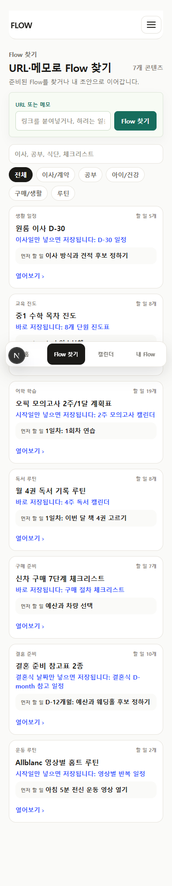
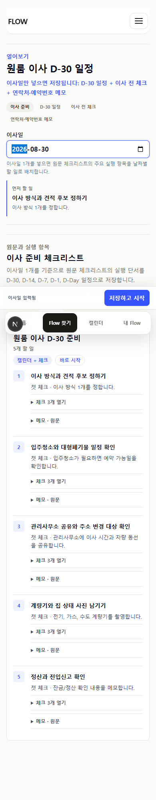
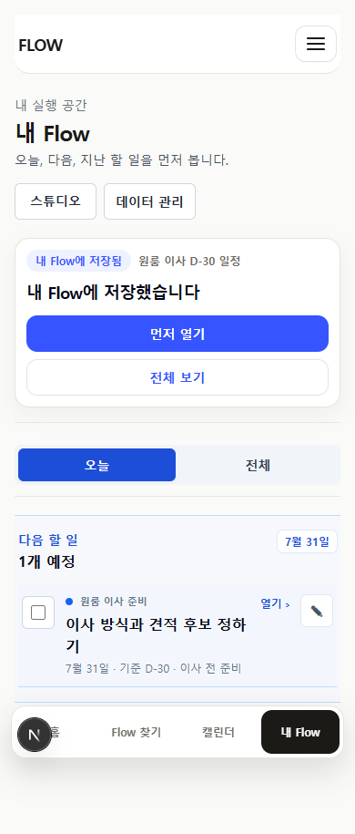

P-01
지금 적용
하나의 실행 항목을 기준으로 삼기
체크 가능한 행동 제목, 필요한 상세 설명, 원문 추적 정보를 기본으로 한다. 일정·장소·비용·담당자·반복은 필요할 때만 붙인다.
현재 정식 명세와 외부 도구 변환 원칙이 일치한다.FlowMe는 긴 계획을 대신 쓰는 앱이 아니다. 원문과 제작자를 지키면서 사용자가 행동을 시작할 수 있도록 일정·체크·기록으로 옮겨 주는 연결 도구다.
체크 가능한 행동 제목, 필요한 상세 설명, 원문 추적 정보를 기본으로 한다. 일정·장소·비용·담당자·반복은 필요할 때만 붙인다.
현재 정식 명세와 외부 도구 변환 원칙이 일치한다.박물관·영상·레시피처럼 날짜가 정해지지 않은 콘텐츠는 먼저 저장하고 나중에 일정을 붙인다.
날짜 없는 실행 항목은 현재 ICS에서도 일정으로 만들지 않는 규칙이 있다.사용자가 받을 체크리스트·일정·표·메모를 먼저 보여준다. 결과를 바꾸는 날짜·지역·월령 같은 정보만 0~1개 먼저 받는다.
24개 전문 실행 서비스 비교와 최근 UX 피드백의 공통 결론이다.저장·체크·일정·기록 중 기본 결과물 하나를 먼저 고르고, 다른 형식은 같은 실행본에서 파생한다.
캘린더·체크리스트·시트·메모를 별도 콘텐츠로 만들면 상태가 갈라진다.전체 금지 항목은 결정 매트릭스와 팀 실행 기준 문서에 담았다.
모든 후보가 저장만·바로 실행·계획으로 펼치기·보류 중 하나로 분류되고, 기본 결과물과 첫 행동이 정해진다.
결과 미리보기 → 저장/실행 → 필요한 입력 → 저장 확인 → 첫 행동 → 나중에 일정 추가가 같은 말과 같은 순서로 이어진다.
먼저 확인할 행동
사용자가 설명 없이 결과물을 이해하고 저장 또는 실행한 뒤, 내 첫 행동과 날짜를 나중에 붙이는 방법을 찾을 수 있는가?
세 개 검증 경로에서 각 5명씩 확인한다. 공개 댓글과 자동 QA는 이 숫자에 포함하지 않는다.
E2 이상 34개, E3 이상 30개를 확인했다. 콘텐츠를 옮겨 쓰거나 따라 한 자기보고의 간접 근거다.
직접 증거가 있는 콘텐츠가 하나뿐이라는 뜻이다. 나머지는 선별 가설 또는 공식 과업으로 따로 검증한다.
| 충돌한 질문 | 확인된 사실 | 최종 판단 |
|---|---|---|
| 육아·여행 중심인가, 루틴·레시피·프로젝트 중심인가? 공개 사용자 반응전략적 판단 | 육아·여행은 유입 맥락이 넓지만 고정 댓글 표본의 실행 자기보고는 운동·루틴이 더 강했다. | 카테고리 하나를 전문 앱처럼 소유하지 않는다. 집·생활 루틴, 제작자 프로그램, 레시피·식단을 세 개의 검증 경로로 운영하고 육아·여행은 이 경로가 쓰이는 상황으로 활용한다. |
| 153개, 44개, 60~90개 중 무엇이 현재 콘텐츠 수인가? 저장소 확인가설·미측정 | 153개는 원재고, 44개는 대표 노출 가능 후보, 현재 /flows 탐색 화면은 7개다. | 지금의 제품 지표는 “검증용 대표 Flow 6~8개”로 둔다. 60~90개는 사용성과 제작 운영이 확인된 뒤의 재고 목표이며 출시 선행조건이 아니다. |
| 기존 P0 24개는 수요가 검증된 콘텐츠인가? 공개 사용자 반응저장소 확인 | 직접 증거 1개, 같은 유형의 인접 증거 19개, 공개 반응 미확인 4개다. | 24개는 비교 후보군으로 유지한다. 직접 증거가 없는 항목은 콘텐츠 품질과 과업 적합성을 따로 확인하며 “검증 완료”라고 부르지 않는다. |
| 7개 Flow 유형을 각각 다른 제품 모델로 만들어야 하는가? 저장소 확인전략적 판단 | 현재 정식 명세는 Item 하나의 상태를 여러 결과물로 변환하고, 일정·반복·분기 등은 축으로 다룬다. | 7개 유형은 콘텐츠팀의 점검표로만 남긴다. 제품에서는 하나의 Item 모델과 네 가지 시작 방식만 사용한다. |
| 외부 도구로 보내는가, FlowMe 안에서 관리하는가? 저장소 확인전략적 판단 | 현재 저장소에는 내 Flow 완료·메모·재사용과 캘린더·체크리스트·시트·메모 변환이 함께 존재한다. | P0는 외부 결과물과 가벼운 실행 상태를 모두 허용하되, 사용자가 돌아오는 이유가 확인되기 전에는 무거운 통합 계획 도구로 확장하지 않는다. |
| 제작자 플랫폼을 지금 만들어야 하는가? 저장소 확인가설·미측정 | 외부 공개 반응은 있으나 FlowMe 관찰 세션은 0/15이며, 27개 제작자 후보 중 공개 가능한 정식 후보는 매우 제한적이었다. | 초기에는 FlowMe가 제작을 지원하고 제작자는 출처·검토·링크로 참여한다. 직접 발행 도구와 수익 배분은 소비자 실행과 제작자 재참여가 확인된 뒤로 미룬다. |
Flow는 특정 상황에서 바로 실행할 수 있도록 출처를 확인한 행동 항목과 필요한 실행 정보가 묶인 재사용 가능한 기준본이다.
원문에 실제로 있는 사실·행동·조건만 기록한다.
행동 제목, 상세 설명, 출처 추적이 기본이다.
여러 Item을 이해하는 데 도움이 될 때만 사용한다.
한 Flow에는 한 가지 사용자 상황과 한 가지 기본 결과물이 있다.
실행 상태를 복제하지 않고 관련 Flow를 연결한다.
날짜, 담당자, 완료, 개인 메모는 비공개 상태로 분리한다.
한 개 행동과 원문 링크면 충분하다. 날짜는 나중에 붙일 수 있다.
1~5개의 체크 또는 참고 메모로 바로 쓸 수 있다.
기준일·기간·반복처럼 결과를 바꾸는 정보 1개를 받고 전체 실행본을 만든다.
원문 행, 권리, 최신성 또는 안전 근거가 부족하면 항목을 만들어 채우지 않는다.
날짜·시간·마감이 핵심
경계: 날짜 없는 Item은 일정으로 만들지 않는다.
독립 행동의 누락 방지가 핵심
경계: 설명이나 링크만 있는 행을 억지로 할 일로 만들지 않는다.
여러 회차·값·상태 비교가 핵심
경계: 기록 열은 실제 사용자 판단에 필요한 것만 둔다.
원문 참고·요약·결정 기록이 핵심
경계: 원문 전체를 복제하지 않고 링크와 필요한 요점만 남긴다.
블로그·영상·공식 안내
받을 일정·체크·표·메모
기본 버튼 하나
결과를 바꾸는 0~1개 입력
내 날짜·완료·메모
필요한 형식 하나
오늘 할 한 가지
지난 기록을 남기고 다시 시작



날짜를 정하지 않아도 가보고 싶은 이유와 장소부터 남깁니다.
원문에서 확인한 준비물만 보고 바로 시작하거나 나중에 저장합니다.
한 개 레시피는 메모로 충분하고, 식단에 넣을 때만 표와 장보기 목록으로 넓힙니다.
전체 결과를 먼저 본 뒤 이사일 하나를 넣으면 날짜별 실행본이 만들어집니다.
시간표를 만들기 전에 가고 싶은 장소부터 저장합니다.
검진 종류, 가능한 기간, 실제 예약일을 서로 다른 정보로 보여줍니다.
검사 가능 기간과 예약일을 분리하고 꼭 챙길 사항만 남깁니다.
전체 계획보다 지금 해야 할 한 회차와 다음 점검만 보여줍니다.
공고를 저장한 뒤 상태와 마감, 다음 행동만 관리합니다.
행사일을 기준으로 누가 무엇을 맡았는지 한눈에 확인합니다.
내 신청 유형에 필요한 준비만 확인하고 실제 신청은 공식 기관에서 완료합니다.
전체 강의를 복제하지 않고 다음 강의와 개인 완료 기록만 관리합니다.
낮은 권리·안전 위험, 반복 행동, 현재 구현 준비도가 함께 높다.
기본 결과: 체크리스트 · 캘린더
P0 집중운동·학습의 공개 자기보고가 상대적으로 강하고, 제작자 시리즈의 출처 행이 명확하다.
기본 결과: 체크리스트 · 진도표 · 캘린더
P0 집중단일 레시피는 단순 메모로 시작할 수 있고, 묶음은 장보기·식단표로 추가 가치가 생긴다.
기본 결과: 메모 · 체크리스트 · 표
P0 파트너 파일럿댓글 반응보다 정확한 기간·마감·공식 링크가 가치의 핵심이다.
기본 결과: 체크리스트 · 캘린더 · 메모
소수 운영| 대표 Flow | 검증 경로 | 확인할 행동 | 기본 결과 | 준비도 | 대표 이유 |
|---|---|---|---|---|---|
| 이사 D-30 | 집·생활 루틴 | 기준일 입력 → 전체 일정 저장 → 첫 행동 | 캘린더 + 체크 + 메모 | 현재 화면 가능 | 기준일형의 대표 |
| 세탁기 필터 관리 | 집·생활 루틴 | 회차 완료 → 다음 점검 | 반복 체크 + 캘린더 | 콘텐츠 보강 | 반복형의 대표 |
| 정확한 제작자 운동 영상 | 제작자 프로그램 | 영상 선택 → 일정 또는 지금 실행 → 회차 기록 | 체크 + 캘린더 | 권리·문구 확인 | 제작자 시리즈의 대표 |
| 공개 강의 시리즈 | 제작자 프로그램 | 다음 강의 확인 → 실행 → 개인 진도 | 체크 + 진도표 | 후보 선별 | 진도형의 대표 |
| 제작자 단일 레시피 | 레시피·식단 | 메모 저장 → 지금 조리 또는 나중에 실행 | 메모 + 체크 | 직접 증거 후보 있음 | 참고형의 대표 |
| 주간 식단과 장보기 | 레시피·식단 | 레시피 선택 → 식단표 → 장보기 | 표 + 체크 | 로직 보강 | 묶음 변환 가치 확인 |
| 자동차검사 기간 | 공식 필수 과업 | 검사 종류·기간 확인 → 예약일 기록 | 캘린더 + 체크 | 기간 UX 보강 | 날짜 범위의 대표 |
| 박물관·체험 저장 | 육아·여행 상황 | 날짜 없이 저장 → 나중에 일정 추가 | 메모 → 캘린더 | P0 새 사례 | 날짜 미정 저장의 대표 |
직접 1, 인접 19, 미확인 4. 24개 전체를 출시 콘텐츠로 간주하지 않는다.
여덟 개의 규칙과 관찰 결과가 확인된 뒤 같은 기준으로 확대한다.
사용자 가치와 제작·검토 처리량이 확인된 뒤의 재고 목표다.
| 능력 | 현재 상태 | 제품 판단 | 근거 위치 |
|---|---|---|---|
| URL·메모 입력과 hit / review / miss 처리 | 이미 구현 | 유지하되 사용자 화면에서는 내부 상태어를 숨긴다. | components/flow/AppClient.tsx, lib/flow/url-first-lookup.ts |
| 공개 Flow 결과 미리보기와 기준일 입력 | 구현됨·정리 필요 | 한 Flow, 한 결과, 한 기본 버튼 규칙으로 화면 간 표현을 맞춘다. | /flow-maps/moving-d30 로컬 렌더링, components/flow/AppClient.tsx |
| 날짜 없는 Item을 ICS에서 제외 | 이미 구현 | 핵심 제품 규칙으로 승격한다. | lib/flow/export.ts, lib/flow/export.test.ts |
| 날짜 범위 데이터와 내보내기 | 구현됨·정리 필요 | 검진·검사 사례로 범위와 예약일의 이해도를 확인한다. | lib/flow/types.ts, lib/flow/export.ts, lib/flow/export.test.ts |
| 캘린더·체크리스트·시트·메모 결과물 | 이미 구현 | 콘텐츠별 기본 결과물 하나를 먼저 보여준다. | components/flow/FlowExportPanel.tsx, lib/flow/export.ts |
| 개인 완료·메모·날짜 수정·재사용 기록 | 이미 구현 | 기능 추가보다 이해 가능한 진입과 한 줄 다음 행동을 먼저 다듬는다. | lib/flow/storage.ts, lib/flow/personal-draft-structural-edit.ts, tests/e2e/p24-execution-trust.spec.ts |
| 제작자·출처·확인일 표시 | 구현됨·정리 필요 | 실행 항목과 분리된 출처 블록으로 통일한다. | lib/flow/types.ts, components/flow/AppClient.tsx |
| SourceRow → Item → Flow 정식 계약 | 명세 우선 | 새 유형을 더하지 말고 다음 seed 정리의 기준으로 사용한다. | docs/specs/2026-07-11-canonical-flow-data-model/spec.md, lib/flow/types.ts |
| 담당자·전달 상태 | P1 이후 | 가족 공동 사용 수요가 확인된 뒤 추가한다. | 현재 공통 runtime 타입에 정식 필드 없음 |
| 인기순 | 중단 필요 | 생성된 usage_count 기반 정렬을 제거한다. | lib/flow/seed-flows.ts, components/flow/AppClient.tsx |
| 직접 API·양방향 동기화·예약·결제·지도 | P0 비대상 | 외부 링크와 내보내기로 남긴다. | 제품 원칙과 버티컬 서비스 경계 |
콘텐츠 수는 많지만 무엇을 저장하고 어떤 결과를 받는지 일관되지 않다.
기능은 있지만 화면마다 저장 결과, 날짜 처리, 다음 행동의 표현이 다르다.
체크 가능한 행동 제목, 필요한 상세 설명, 원문 추적 정보를 기본으로 한다. 일정·장소·비용·담당자·반복은 필요할 때만 붙인다.
박물관·영상·레시피처럼 날짜가 정해지지 않은 콘텐츠는 먼저 저장하고 나중에 일정을 붙인다.
사용자가 받을 체크리스트·일정·표·메모를 먼저 보여준다. 결과를 바꾸는 날짜·지역·월령 같은 정보만 0~1개 먼저 받는다.
저장·체크·일정·기록 중 기본 결과물 하나를 먼저 고르고, 다른 형식은 같은 실행본에서 파생한다.
원문과 제작자 표시는 보존하고, FlowMe 편집 내용과 사용자의 비공개 수정·완료·메모를 별도 층으로 관리한다.
긴 콘텐츠 목록보다 현재 Flow의 결과, 첫 행동, 원문, 저장 또는 실행 버튼을 우선한다.
실제 이벤트가 쌓이기 전에는 인기순을 사용하지 않는다. 큐레이션·최근 확인·가나다순처럼 설명 가능한 정렬만 쓴다.
집·생활 루틴, 제작자 프로그램, 레시피·식단을 비교하고 공식 필수 과업은 소수의 신뢰 경로로 분리한다.
60~90개를 채우기 전에 서로 다른 행동 방식과 결과물을 대표하는 8개 Flow의 품질과 사용 흐름을 확인한다.
모든 후보가 저장만·바로 실행·계획으로 펼치기·보류 중 하나로 분류되고, 기본 결과물과 첫 행동이 정해진다.
결과 미리보기 → 저장/실행 → 필요한 입력 → 저장 확인 → 첫 행동 → 나중에 일정 추가가 같은 말과 같은 순서로 이어진다.
세 개 검증 경로에서 각 5명을 관찰하고 결과 이해, 저장·실행 시작, 날짜 나중에 정하기, 출처 인지를 확인한다.
가볼 곳 저장 + 원문 · 날짜 미정
준비 체크 + 원문 영상 · 지금 실행 가능
레시피 메모 + 조리 체크 · 메모로 바로 저장
일정 + 체크 + 메모 · 기준일 적용
목적지 저장 + 원문 · 여행 후보
기간 확인 + 예약 행동 · 공식 확인 필요
기간 + 마감 알림 + 준비 · 기한 관리
반복 체크 + 다음 점검 · 이번 회차
지원 표 + 후속 행동 · 지원 후보
담당 체크 + 행사일 · 역할 분담 · P1 후보
준비 체크 + 공식 링크 · 공식 절차
다음 학습 + 개인 진도 · 개인 진도